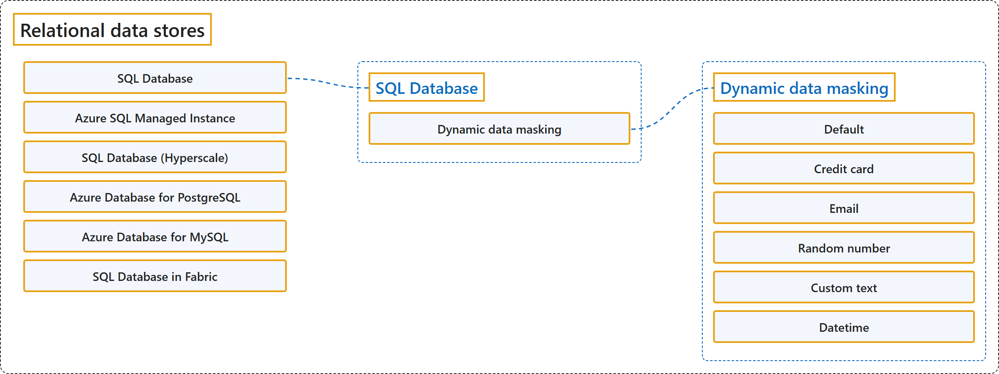

9.1 Relational Data Stores
Classification

Glossary
| Term | Definition | 中文翻译 | Source |
|---|---|---|---|
| SQL Database SQL 数据库 |
"SQL Database is a managed relational database for modern cloud applications that use the SQL Server engine." | SQL 数据库是一种托管关系数据库，面向现代云应用程序，使用的是 SQL Server 引擎。 | Microsoft, 2025, "Select an Azure service for relational data stores" section, list item 1 |
| Dynamic data masking 动态数据掩码 |
"Azure SQL Database, SQL database in Microsoft Fabric, and Azure SQL Managed Instance support dynamic data masking (DDM). Dynamic data masking limits sensitive data exposure by masking it to nonprivileged users." | Azure SQL 数据库、Microsoft Fabric 中的 SQL 数据库和 Azure SQL 托管实例都支持动态数据掩码（DDM）。动态数据掩码通过对非特权用户掩盖敏感数据来减少敏感数据的暴露。 | Microsoft, 2026, para. 1 |
| Default 默认 |
"Default Full masking according to the data types of the designated fields" | 默认：按指定字段的数据类型进行完全掩码。 | Microsoft, 2026, "Dynamic data masking policy" section, "Masking functions" table, row 1 |
| Credit card 信用卡 |
"Credit card Masking method, which exposes the last four digits of the designated fields and adds a constant string as a prefix in the form of a credit card." | 信用卡：只露出指定字段的最后四位，并在前面加一个信用卡格式的固定字符串。 | Microsoft, 2026, "Dynamic data masking policy" section, "Masking functions" table, row 2 |
| Email 电子邮件 |
"Email Masking method, which exposes the first letter and replaces the domain with XXXX.com using a constant string prefix in the form of an email address." | 电子邮件：只露出第一个字母，并把域名替换成 XXXX.com，前缀是电子邮件格式的固定字符串。 | Microsoft, 2026, "Dynamic data masking policy" section, "Masking functions" table, row 3 |
| Random number 随机数 |
"Random number Masking method, which generates a random number according to the selected boundaries and actual data types." | 随机数：生成一个随机数，范围按所选的边界和实际数据类型决定。 | Microsoft, 2026, "Dynamic data masking policy" section, "Masking functions" table, row 4 |
| Custom text 自定义文本 |
"Custom text Masking method, which exposes the first and last characters and adds a custom padding string in the middle." | 自定义文本：只露出首尾字符，中间加一段自定义的填充字符串。 | Microsoft, 2026, "Dynamic data masking policy" section, "Masking functions" table, row 5 |
| Datetime 日期时间 |
"Datetime Enables granular masking for date/time columns, namely datetime, datetime2, date, time, datetimeoffset, and smalldatetime." | 日期时间：对日期/时间列做细粒度掩码，即 datetime、datetime2、date、time、datetimeoffset 和 smalldatetime。 | Microsoft, 2026, "Dynamic data masking policy" section, "Masking functions" table, row 6 |
| Azure SQL Managed Instance Azure SQL 托管实例 |
"Azure SQL Managed Instance is a near-complete SQL Server environment in the cloud that's ideal for lift-and-shift migrations." | Azure SQL 托管实例是云中近乎完整的 SQL Server 环境，非常适合直接迁移（lift-and-shift）。 | Microsoft, 2025, "Select an Azure service for relational data stores" section, list item 2 |
| SQL Database (Hyperscale) SQL 数据库（超大规模） |
"SQL Database (Hyperscale) is a highly scalable SQL tier designed for massive workloads with fast autoscaling and rapid backups." | SQL 数据库（超大规模）是一种高度可扩展的 SQL 层级，专为海量工作负载设计，具有快速自动缩放和快速备份能力。 | Microsoft, 2025, "Select an Azure service for relational data stores" section, list item 3 |
| Azure Database for PostgreSQL Azure Database for PostgreSQL |
"Azure Database for PostgreSQL is a managed PostgreSQL service that supports open-source extensions and flexible deployment options." | Azure Database for PostgreSQL 是一种托管 PostgreSQL 服务，支持开源扩展和灵活的部署选项。 | Microsoft, 2025, "Select an Azure service for relational data stores" section, list item 4 |
| Azure Database for MySQL Azure Database for MySQL |
"Azure Database for MySQL is a managed MySQL database for web apps and open-source workloads." | Azure Database for MySQL 是一种托管 MySQL 数据库，用于 Web 应用和开源工作负载。 | Microsoft, 2025, "Select an Azure service for relational data stores" section, list item 5 |
| SQL Database in Fabric Fabric 中的 SQL 数据库 |
"SQL Database in Fabric is a developer-friendly transactional database, based on SQL Database, that you can use to easily create an operational database in Fabric." | Fabric 中的 SQL 数据库是一种对开发人员友好的事务数据库，基于 SQL 数据库，你可以用它在 Fabric 中轻松创建操作数据库。 | Microsoft, 2025, "Select an Azure service for relational data stores" section, list item 6 |
References
- Microsoft. (2025, September 23). Understand data models. Azure Architecture Center. https://learn.microsoft.com/en-us/azure/architecture/data-guide/technology-choices/understand-data-store-models
- Microsoft. (2026, November 3). Dynamic data masking. Microsoft Learn. https://learn.microsoft.com/en-us/azure/azure-sql/database/dynamic-data-masking-overview